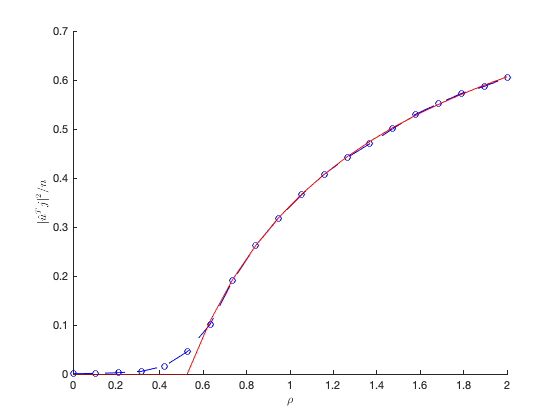

Section 4.7: Practical Lecture Material 3
This page contains simulations of Practical course material 3 in Section 4.6.
Contents
Spectra of uniformly "punctured" kernel matrices
close all; clear; clc coeff = 2; p = 256*coeff; n = 1024*coeff; c = p/n; mu = [1; zeros(p-1,1)]; j = [-ones(n/2,1); ones(n/2,1)]; Z = randn(p,n); X = Z + mu*(j'); B_eps = 0.5; B = rand(n,n)<B_eps; B = triu(B) + triu(B)'; B = B - diag(diag(B)); b = 0; K = (X'*X/p).*B; eigs_K = eig(K); edges=linspace(min(eigs_K)-.1,max(eigs_K)+.1,100); clear i % make sure i stands for the imaginary unit y = 1e-5; zs = edges+y*1i; dens = zeros(length(zs),1); m=0; for index=1:length(zs) z = zs(index); m_tmp=-1; while abs(m-m_tmp)>1e-6 m_tmp=m; m = 1/( -z + b - m*B_eps/c + B_eps^3*m^2/c/(c+B_eps*m) ); end dens(index)=imag(m)/pi; end figure histogram(eigs_K, 40, 'Normalization', 'pdf', 'EdgeColor', 'white'); hold on; plot(edges,dens,'r', 'Linewidth',2); legend('Empirical spectrum', 'Limiting spectrum', 'FontSize', 15, 'Interpreter', 'latex');

Behavior of isolated eigenvector of 
close all; clear; clc coeff = 2; p = 256*coeff; n = 1024*coeff; c = p/n; j = [-ones(n/2,1);ones(n/2,1)]; B_eps = .5; nb_average_loop = 30; rho_range = linspace(0,2,20); store_align = zeros(length(rho_range),nb_average_loop); theo_align = zeros(length(rho_range),1); for index = 1:length(rho_range) rho = rho_range(index); mu = [sqrt(rho); zeros(p-1,1)]; for average_loop = 1:nb_average_loop Z = randn(p,n); X = Z + mu*(j'); B = rand(n,n)<B_eps; B = triu(B) + triu(B)'; B = B - diag(diag(B)); b = 0; K = (X'*X/p).*B; [hat_v,~] = eigs(K,1,'largestreal'); if j'*hat_v <=0 hat_v = -hat_v; end store_align(index,average_loop) = (j'*hat_v)^2/n; end F_coeff = [1, 2, 1-c/B_eps, -2*c, -c]; F = @(x) polyval(F_coeff,x); solu = roots(F_coeff); real_solu = real(solu(abs(imag(solu))<1e-4)); Gamma = max(real_solu); if rho>Gamma theo_align(index) = F(rho)/rho/(1+rho)^3; else theo_align(index) = 0; end end figure hold on plot(rho_range, mean(store_align,2), 'b--o'); plot(rho_range, theo_align, 'r'); xlabel('$\rho$', 'Interpreter', 'latex') ylabel('$|\hat u^T j|^2/n$', 'Interpreter', 'latex')